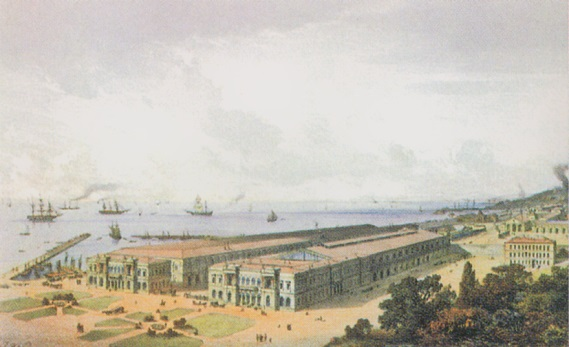
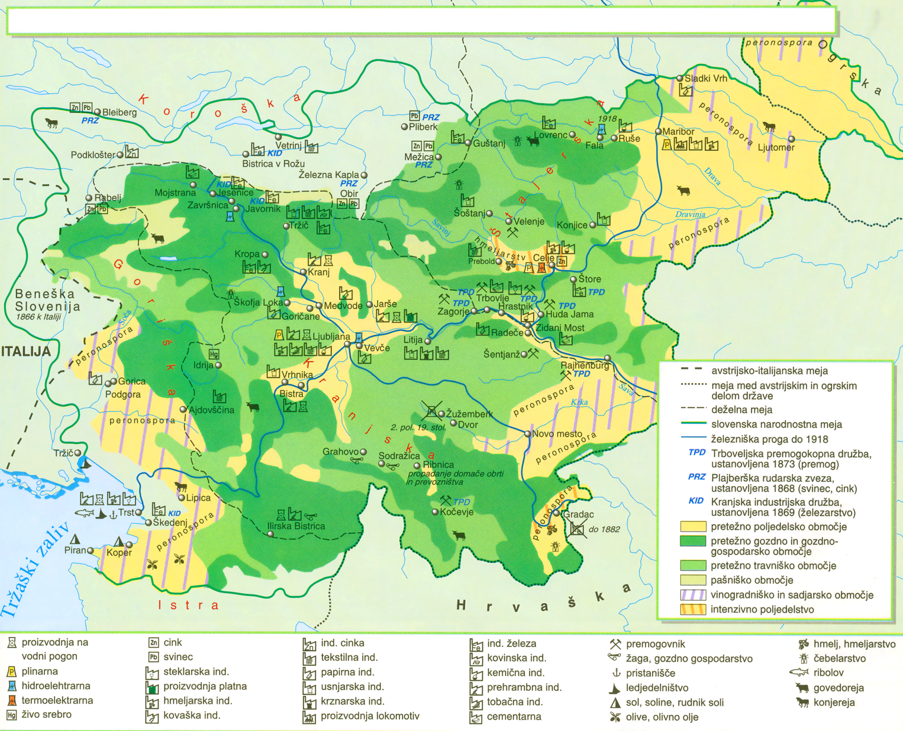
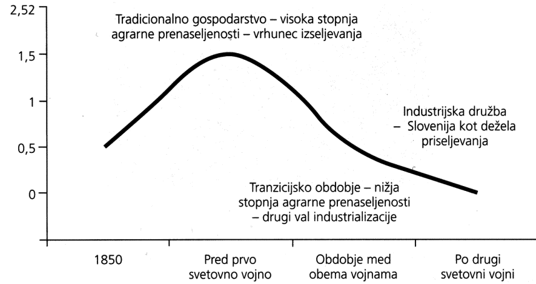
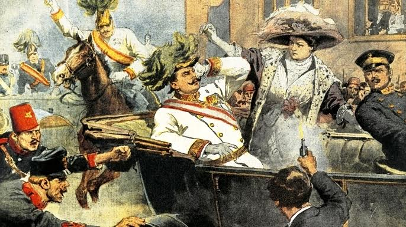
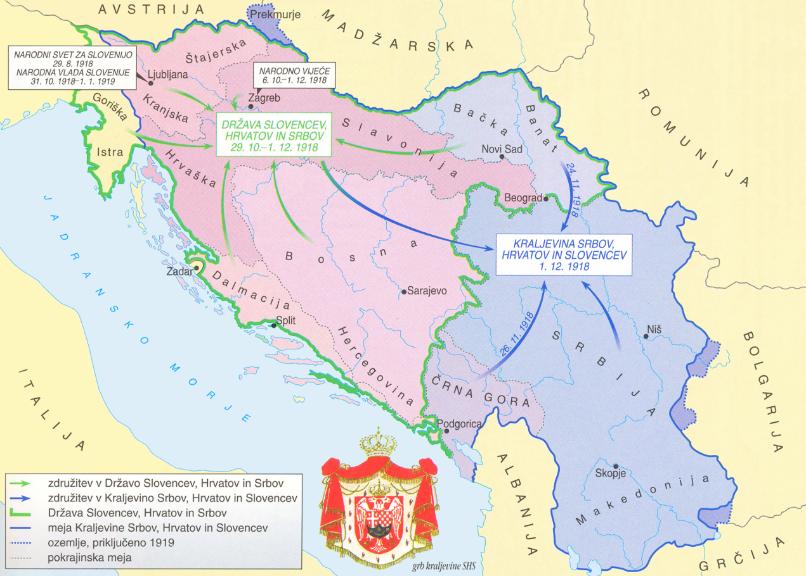
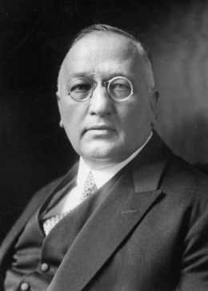
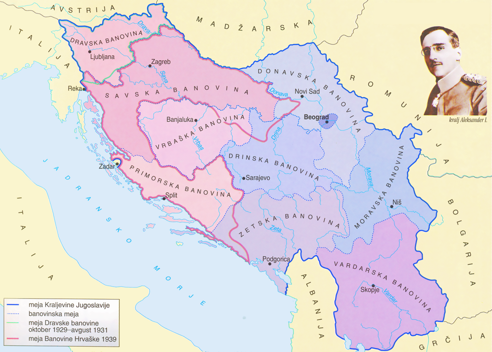
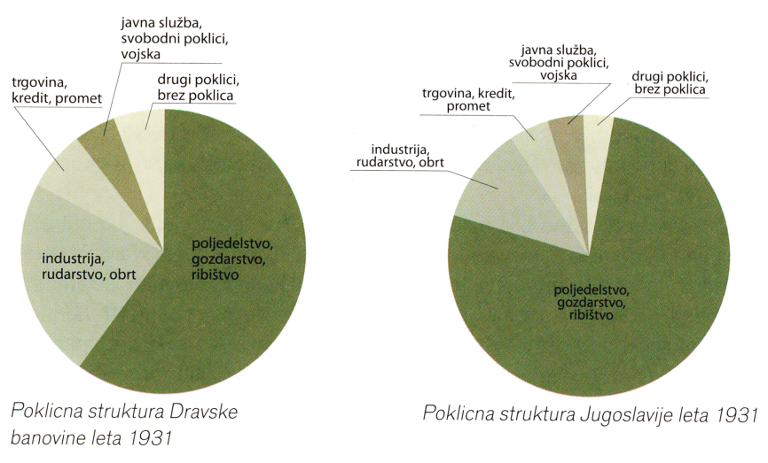
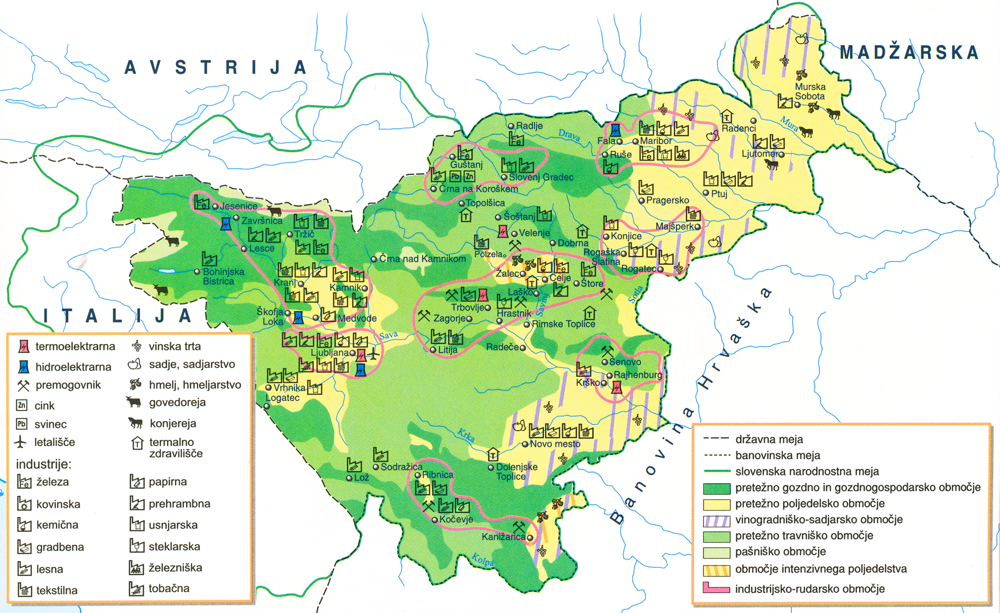
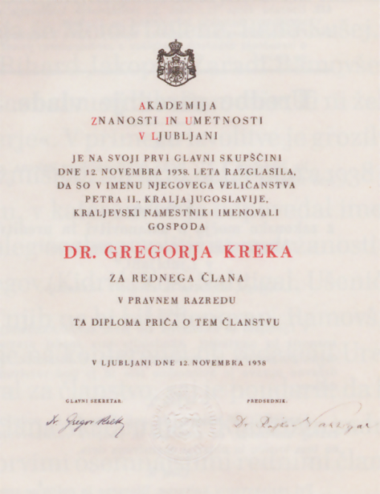

Slovensko nacionalno preoblikovanje
1
V prvih letih avstrijskega parlamentarizma so na
državni in deželnih ravneh zahteve Slovencev le redko
naletele na posluh. To se je začelo spreminjati v
osemdesetih letih 19. stoletja, kar je v spominih
poudaril slovenski poslanec Fran Šuklje.
3 točke
Toda opis deželnega zbora iz l. 1883 bi bil nepopoln,
ako ne bi obsegal obenem osebe vladnega zastopnika,
deželnega predsednika barona Antona Winklerja. /…/
Velika pridobitev je bila za slovensko stvar, da je
Taaffe pričetkom svoje vlade poslal nam Slovencem za
deželnega predsednika na Kranjsko rojaka, ne le po
pokolenju, temveč po prepričanju.
Vir: Šuklje, F., 1988: Iz mojih spominov, I. del,
str. 128. Slovenska matica. Ljubljana
1.1
V času vladanja katerega predsednika avstrijske
vlade je slovenščina dobila več pravic, kot jih je
imela dotlej?
Rešitev
(Eduard) Taaffe
1.2
Navedite razloge, zaradi katerih so lahko slovenski
politiki dosegli največje uspehe na Kranjskem.
Rešitev (dve od)
- Kranjska je dobila slovenskega deželnega predsednika.
- Na Kranjskem je bila večina prebivalstva slovenskega.
- Kranjsko je vlada priznala za deželo s slovensko večino.
- Vlada je nehala podpirati nemško (ustavoverno) stranko na Kranjskem.
- Na Kranjskem je slovenska (Narodna) stranka dobila večino v deželnem zboru.
- Slovenska (Narodna) stranka je zmagala na občinskih volitvah v Ljubljani.
1.3
Pojasnite, zakaj se je Frana Šukljeta in sodelavcev
oprijelo ime »elastiki«.
Rešitev (ena od)
- Zagovarjali so prilagodljivo popuščanje vladni politiki za dosego drobnih ciljev.
- Menili so, da z radikalnimi zahtevami ne bodo dosegli ciljev.
2
Narodna stranka se je v začetku devetdesetih let 19.
stoletja razcepila na Katoliško narodno stranko in
Narodnonapredno stranko. Povežite zahteve strank (K =
Katoliška narodna stranka, N = Narodnonapredna
stranka).
3 točke
| Zahteva | Stranka |
|---|---|
| pravna država | N – Narodnonapredna stranka |
| uskladitev vseh področij z načeli katoliške vere | K – Katoliška narodna stranka |
| reševanje kmečkega vprašanja | K – Katoliška narodna stranka |
| uvedba splošne (moške) volilne pravice | K – Katoliška narodna stranka |
| narodna avtonomija oz. Zedinjena Slovenija | N – Narodnonapredna stranka |
| razvoj vrhunskih slovenskih kulturnih ustanov | N – Narodnonapredna stranka |
Za 6 pravilnih 3 t. · za 5–4 → 2 t. · za 3–2 → 1 t.
3
Med Slovenci se je ob koncu 19. stoletja začelo krepiti
neoslovansko gibanje, ki si je prizadevalo za
sodelovanje slovanskih narodov v monarhiji. Pri
reševanju si pomagajte s sliko 7 v barvni prilogi.
3 točke

Slika 7
Vir: Cvirn, J., Studen, A., 2010: Zgodovina 3, str. 155. DZS. Ljubljana
Vir: Cvirn, J., Studen, A., 2010: Zgodovina 3, str. 155. DZS. Ljubljana
3.1
V katerem mestu na Kranjskem je bilo nemško
prebivalstvo v večini?
Rešitev
Kočevje
3.2
Pripadniki katerih treh narodov so v večjem številu,
poleg Slovencev, še prebivali na ozemlju današnje
Slovenije.
Rešitev (tri od)
- Nemci
- Italijani
- Madžari
3.3
Pojasnite zunanjepolitično usmeritev neoslovanskega
gibanja.
Rešitev (ena od)
- Zagovarjali so naslonitev (Avstro-Ogrske) na Rusijo.
- Zagovarjali so povezovanje s slovanskimi državami.
- Zagovarjali so povezovanje s slovanskimi / južnoslovanskimi / jugoslovanskimi narodi.
4
Tik pred 1. svetovno vojno se je med mladimi Slovenci
pojavila tajna organizacija, ki je rešitev slovenskega
vprašanja iskala zunaj meja Avstro-Ogrske.
2 točki
Nehati mora separatizem med Slovenci, Srbo-hrvati in
Bolgari, ne smemo si biti več tujci, ker le v tem vidimo
rešitev našega narodnostnega vprašanja. Priti moramo do
narodnega vjedinjenja vseh Jugoslovanov, s tem bomo
postali močni in od naših sovražnikov nepremagljivi.
Vir: Slovenski mladini. V: Preporod, I, št. 1, 1.
11. 1912, str. 1
4.1
Navedite, kako so se imenovali člani te tajne
organizacije.
Rešitev
preporodovci
4.2
Pojasnite, kako so hoteli rešiti slovensko
vprašanje.
Rešitev (ena od)
- Rešitev so videli v združitvi južnih Slovanov v Jugoslavijo.
- Jugoslovanska država bi po njihovem mnenju nastala le na ruševinah Avstro-Ogrske.
- Rešitev naj bi izvedli po revolucionarni poti.
5
V drugi polovici 19. stoletja je država liberalizirala
gospodarstvo, Trst pa je postal cvetoče trgovsko in
gospodarsko središče. Pri reševanju si pomagajte s sliko
1.
2 točki

Slika 1: Železniška postaja v Trstu
Vir: Cvirn, J., Studen, A., 2010: Zgodovina 3, str. 153. DZS. Ljubljana
Vir: Cvirn, J., Studen, A., 2010: Zgodovina 3, str. 153. DZS. Ljubljana
5.1
Katera novost je Trstu omogočila tako hiter
gospodarski razvoj?
Rešitev (ena od)
- južna železnica / železnica Dunaj–Trst
- železniška povezava z notranjostjo države
5.2
Kakšne ugodnosti so od tega razvoja pridobile s
Slovenci poseljene pokrajine?
Rešitev (dve od)
- Trst je pritegnil delovno silo iz zaledja.
- Železnica je potrebovala premog / železo / surovine iz slovenskih predelov.
- Izdelki iz tovarn na Slovenskem so (z železnico / pristaniščem Trst) pridobili nove trge.
- Na Slovensko so začeli dotekati cenejši industrijski proizvodi iz tujine.
6
Industrializacijo so zaznamovale velike spremembe v
načinu proizvodnje, pridobivanju delovne sile in
energentov ter prevozu surovin in končnih izdelkov. Pri
reševanju si pomagajte s sliko 8 v barvni prilogi.
2 točki

Uporaba premoga je tudi na Slovenskem postala ločnica
modernizacijskih tendenc. O tem več kot nazorno priča
konsolidacija fužinarstva in oblikovanje sodobnih
industrijskih železarskih obratov na Jesenicah, Ravnah
in Prevaljah in v Štorah. /…/ Vse te steklarne so
živahno delovale, dokler jim je bilo na voljo obilje
lesa ali oglja v bližini. Kakor hitro pa se je lesna
masa zaradi posekov oddaljevala, so pričele usihati tudi
steklarne, kajti prestavljanje mesta proizvodnje, prevoz
lesa ali oglja je višal proizvodne stroške.
Vir: Lazarević, Ž., 2013: Spremembe in zamišljanja,
str. 46. Inštitut za novejšo zgodovino.
Ljubljana
6.1
Glede na besedilo pojasnite, kaj je bilo treba
spremeniti v proizvodnem procesu za uspešno
preoblikovanje v sodoben industrijski obrat.
Rešitev (ena od)
- Posodobiti so morali oskrbo z energijo / zamenjati odvisnost od lesa za premog.
- Racionalizirati so morali stroške za energijo (kot enega večjih proizvodnih stroškov).
6.2
Navedite imeni dveh največjih delniških družb, ki
sta posodobiti železarstvo na Slovenskem.
Rešitev
- Kranjska industrijska družba
- Trboveljska premogokopna družba
7
V gospodarskem razvoju so si sledila leta konjunkture
in krize, kar je vplivalo na različno dinamiko razvoja
podjetij na Slovenskem. Pri reševanju si pomagajte s
sliko 8 v barvni prilogi. Obkrožite črke pred tremi
pravilnimi trditvami.
3 točke
A – Industrijski razvoj na Slovenskem je bil
najhitrejši v južnih predelih.
B – Večina rudnikov svinca in cinka je bila na
Koroškem.
C – Rudnik živega srebra v Idriji je povečal svoj
pomen z železniško povezavo s svetom.
D – Zlom dunajske borze leta 1873 je za daljši čas
upočasnil gospodarski razvoj monarhije.
E – Nove prometne povezave so povzročile propadanje
prevozništva.
F – V prehrambni industriji je ob koncu 19. stoletja
pridobivalo večjo vlogo vinogradništvo.
8
Spremembe v kmetijstvu v drugi polovici 19. stoletja so
sprožile val izseljevanja. S pomočjo slike 2 pojasnite
soodvisnost vpliva kmetijske in industrijske proizvodnje
na izseljevanje.
1 točka

Slika 2
Vir: Lazarević, Ž., 2013: Spremembe in zamišljanja, str. 64. Inštitut za novejšo zgodovino. Ljubljana
Vir: Lazarević, Ž., 2013: Spremembe in zamišljanja, str. 64. Inštitut za novejšo zgodovino. Ljubljana
Rešitev (ena od)
- Agrarna prenaseljenost / zaostali agrarni sektor je povzročil visok presežek delovne sile, ki pa ga zaradi zaostanka v industrializaciji niso uspeli zaposliti v industriji v domačem okolju.
- Ko se je stopnja kmečke prenaseljenosti zmanjšala, se je preseljevanje preusmerilo v bližnja industrijska središča.
9
Slovenci so se selili na različne konce sveta. Za
nekatere poklice je bilo značilno izseljevanje v
posamezne dežele. Povežite območje priseljevanja in
izseljevanja.
2 točki
| Območje priseljevanja | Območje izseljevanja |
|---|---|
| Egipt | B – Goriška |
| Vestfalija | C – Zasavje |
| Tržaška | D – Istra |
| Severna Amerika | A – Kranjska |
Za 4 pravilne 2 t. · za 3–2 → 1 t.
Razvoj slovenskega naroda v 20. stoletju
10
V 20. stoletje so Slovenci vstopili kot narod z razvito
kulturno identiteto. To je v svojih razpravah poudarjal
tudi sociolog univerze v Gradcu Ludwig Gumplowicz.
3 točke
Pravijo, da se dandanes otroci že rode bolj
inteligentni; zdi se nam pa, da se godi isto z mladimi
kulturnimi narodi. Ne rabijo več stoletij, da se
dvignejo na višino starejših kulturnih narodov: danes se
to zgodi neverjetno hitro. Za vzgled takšnega hitrega
kulturnega razvoja bi lahko navedli tudi Slovence.
Vir: Gumplowicz, L., 1907: Sociološki problemi v
avstrijski politiki. V: Slovan 5, št. 10, str.
311
10.1
Glede na besedilo navedite, kakšen je bil slovenski
kulturni razvoj.
Rešitev (ena od)
- hiter
- hitrejši (kot pri večjih narodih)
10.2
Opišite vlogo Slovenske matice v tem procesu.
Rešitev (ena od)
- Izdajala je znanstvena in literarna dela (za zahtevnejše bralstvo).
- Izdajala je srednješolske učbenike (za uveljavljanje slovenščine v srednjih šolah).
- Z izdajanjem zahtevnejše literature je dokazovala, da hoče biti slovenščina enakopravna jezikom drugih narodov.
10.3
Kakšno je bilo razmerje nemščine in slovenščine kot
učnega jezika v srednjih šolah?
Rešitev (ena od)
- V srednjih šolah je prevladovala nemščina.
- Slovenščina se je kot učni jezik uporabljala le na nekaterih gimnazijah / srednjih šolah.
- Edina / prva popolna slovenska gimnazija je bila zasebna / škofijska (v Šentvidu pri Ljubljani).
- Večina gimnazij je bila nemških ali dvojezičnih z manjšo vlogo slovenščine.
11
Uveljavljanje slovenščine na univerzitetni ravni ni
bilo brez težav in predsodkov, kar je v svojih spominih
opisal profesor Matija Murko.
2 točki
Moje imenovanje za rednega profesorja slovanske
filologije v Gradcu je bilo izvršeno 11. aprila 1902 in
ob koncu aprila sem že bil na svojem mestu. Ko sem se
prišel zahvalit cesarju Francu Jožefu, me je do neke
mere presenetil z izjavo, da mora biti slovenščina prav
zaostala, kakor so to po navadi govorili v
protislovenskih birokratskih in vojaških krogih. Jaz sem
mu odgovoril, da ima slovenščina célo biblijo in prvo
slovnico iz istega stoletja kot nemščina.
Vir: Murko, M., 1951: Spomini, str. 130. Slovenska
matica. Ljubljana
11.1
Glede na besedilo opišite, kakšno utemeljitev je v
bran slovenščine uporabil profesor Murko.
Rešitev (ena od)
- Poudaril je, da ima slovenščina prevod biblije / prve slovnice iz istega stoletja kakor nemščina.
- Poudaril je, da razvoj slovenskega (knjižnega) jezika sega v čas reformacije.
11.2
Kako se je avstrijska oblast odzvala na pobudo za
ustanovitev slovenske univerze v Ljubljani?
Rešitev (ena od)
- Avstrijska oblast je zavračala zahtevo po ustanovitvi univerze v Ljubljani.
- Avstrijska oblast je nasprotovala ustanovitvi slovenske univerze.
12
Pred začetkom 1. svetovne vojne so se zaostrile razmere
na Balkanskem polotoku.
2 točki

Slika 3
Vir: http://zgodovina.si/...porocanje-casopisja-na-slovenskem-1-del/. Pridobljeno: 2. 4. 2019.
Vir: http://zgodovina.si/...porocanje-casopisja-na-slovenskem-1-del/. Pridobljeno: 2. 4. 2019.
12.1
Kateri dogodek, ki je bil povod za 1. svetovno
vojno, je prikazan na sliki 3?
Rešitev
sarajevski atentat / atentat na Franca
Ferdinanda
12.2
Pojasnite, s katerimi izrednimi ukrepi se je
avstrijska oblast odzvala na ta dogodek.
Rešitev (dve od)
- Omejile so državljanske svoboščine.
- Prenehal je delovati parlament.
- Velika pooblastila nad civilisti je dobila vojska.
- Preganjali so protiavstrijska čustva / izjave.
- Prepovedali so delovanje političnih strank.
- Prepovedali so izhajanje nekaterih časopisov.
- Prepovedali so delovanje nekaterih društev.
13
Dolgotrajna vojna se ni občutila le na bojišču, temveč
so se z njo vsakodnevno srečevali tudi v zaledju.
2 točki
Velika stiska je bila s petrolejem in tobakom,
primanjkovalo je celo krompirja. Zavladalo je veliko
pomanjkanje premoga. Težave so imeli z ulično
razsvetljavo. Prodajali so nadomestke jedi in maščob. To
je bilo pravzaprav obdobje začetkov intenzivne
industrijske proizvodnje hrane in različnih nadomestkov.
Vir: Štepec, M., 2008: Vojne fotografije:
1914–1918, str. 163. Defensor. Ljubljana
13.1
Glede na besedilo navedite, kako se je pomanjkanje
kazalo v prehrani prebivalstva.
Rešitev (tri od)
- Primanjkovalo je krompirja.
- Kruh je bil slabše kakovosti.
- V živila so dodajali primesi.
- Uveljavili so se nadomestki jedi in maščob.
- Uveljavljala se je industrijska proizvodnja hrane.
- Pojavljali so se prehrambni nadomestki.
13.2
Kaj so oblasti storile s prebivalstvom v neposredni
bližini fronte?
Rešitev (ena od)
- Preselili so jih (v notranjost države).
- Zanje so ustanavljali begunska taborišča (v notranjosti države).
- Ker so ostali brez vsega, je morala za njihovo oskrbo poskrbeti država.
14
Med vojno sta nastali dve deklaraciji, ki sta
opredelili zahteve južnih Slovanov v Avstro-Ogrski.
Majniško deklaracijo so podpisali maja 1917, Krfsko
deklaracijo pa julija 1917.
4 točke
Podpisani poslanci /…/ izjavljajo, da zahtevajo na
temelju narodnega načela in hrvaškega državnega prava,
naj se vsa ozemlja monarhije, v katerih prebivajo
Slovenci, Hrvati in Srbi, združijo pod žezlom
habsburško-lotarinške dinastije v samostojno državno
telo, ki bodi prosto vsakega narodnega gospostva tujcev
in osnovano na demokratični podlagi. Za uresničevanje te
zahteve enotnega naroda bomo zastavili vse moči.
Vir: Zadnik, Š., 1978: Zbirka zgodovinskih virov,
str. 32. DZS. Ljubljana
Izbrana deklaracija
A – MAJNIŠKA DEKLARACIJA
14.1
Katera skupina politikov iz Avstro-Ogrske je bila
podpisnica deklaracije?
Rešitev
Jugoslovanski (poslanski) klub
14.2
Pri kom so podpisniki iskali politično pomoč?
Rešitev (ena od)
- pri avstrijski vladi
- v deklaracijskem gibanju
14.3
V kateri državi in pod katero dinastijo naj bi po
mnenju podpisnikov deklaracije Slovenci živeli po
vojni?
Rešitev (ena od)
- Slovenci naj bi živeli (v jugoslovanski državi) v habsburški monarhiji / Avstro-Ogrski pod Habsburžani / habsburško-lotarinško dinastijo.
14.4
Kakšen je bil odmev deklaracije med Slovenci?
Rešitev (ena od)
- Deklaracija je poenotila delovanje slovenskih politikov v naslednjih dogodkih.
- Deklaracija je sprožila deklaracijsko gibanje.
- Deklaracija je naletela na širok odziv med Slovenci.
15
Po razpadu Avstro-Ogrske je na njenem jugu nastala
Država Slovencev, Hrvatov in Srbov. Pri reševanju si
pomagajte s sliko 9 v barvni prilogi.
3 točke

15.1
Navedite ime organa, ki je imel v tej državi
neposredno oblast na Slovenskem.
Rešitev
Narodna vlada za Slovenijo / Narodna vlada
Slovenije
15.2
S katerimi težavami se je soočila ta oblast?
Rešitev (tri od)
- vzpostavitev reda
- vzpostavitev novih organov oblasti
- preskrba prebivalstva s hrano
- zdravstvena oskrba prebivalstva
- vračanje slovenskih vojakov z drugih front
- prehod vojske preko (slovenskega) ozemlja
- prodiranje italijanske vojske na zahodu
15.3
Pojasnite pomen te države za razvoj slovenske
državnosti.
Rešitev (ena od)
- Slovenci so bili prvič omenjeni v imenu države.
- Slovenci so prvič dobili svojo / narodno vlado.
- Slovenci so v državi prvič vzpostavili slovenske državne vojaške enote.
16
Država Slovencev, Hrvatov in Srbov se je s Kraljevino
Srbijo hitro združila v Kraljevino Srbov, Hrvatov in
Slovencev. Pri reševanju si pomagajte s sliko 9 v barvni
prilogi.
3 točke
Po sklepu sedanjega odbora Narodnega sveta z dne 24.
novembra 1918 je posebno odposlanstvo Narodnega sveta
dne 1. decembra 1918 ob 8. uri zvečer v slovesni
spomenici na prestolonaslednika Aleksandra razglasilo
zedinjenje vsega naroda Slovencev, Hrvatov in Srbov v
enotno jugoslovansko državo pod vladavino kralja Petra
I. oziroma prestolonaslednika Aleksandra kot regenta.
Vir: Zadnik, Š., 1976: Zbirka zgodovinskih virov,
str. 85. DZS. Ljubljana
16.1
V katerem mestu je bil dogodek, opisan v besedilu?
Rešitev
Beograd
16.2
Katera predvojna država, poleg Srbije, je tudi
postala del Kraljevine Srbov, Hrvatov in Slovencev?
Rešitev
Črna gora
16.3
Kaj se je po združitvi zgodilo z organi oblasti
Države Slovencev, Hrvatov in Srbov?
Rešitev (ena od)
- Narodno vijeće v Zagrebu je prenehalo delovati.
- Narodna vlada za Slovenijo je izgubila velik del svojih pristojnosti / je postopoma izgubljala svoje pristojnosti.
- Narodno vlado za Slovenijo je zamenjala Deželna vlada.
- Upravni organi (Države SHS) so bili preoblikovani v pokrajinske, podrejene centralni oblasti v Beogradu.
17
Po 1. svetovni vojni je del slovenskega prebivalstva
ostal zunaj nove jugoslovanske države, nekatera sporna
ozemlja pa je ta pridobila. Povežite pojme.
2 točki
| Pojem | Rešitev |
|---|---|
| izguba Primorske | B – sporazum v Rapallu |
| pridobitev Prekmurja | D – Trianonska mirovna pogodba |
| izguba južnega dela Koroške | A – plebiscit |
| pridobitev Maribora in Radgone | C – Rudolf Maister |
Za 4 pravilne 2 t. · za 3–2 → 1 t.
18
Največji delež Slovencev zunaj Kraljevine SHS je ostal
v Italiji. Odnos do njih se je še poslabšal, ko so
oblast v Italiji prevzeli fašisti. Pojasnite, na kakšne
načine so se Slovenci upirali italijanskim poskusom
raznarodovanja.
1 točka
Rešitev (dve od)
- Organizirali so ilegalne / tajne organizacije.
- Organizacija TIGR je odgovorila z nasilnimi sredstvi.
- Uničevali so simbole raznarodovanja.
- Slovenščino so poučevali skrivaj.
- Širili so slovenski tisk (iz Jugoslavije).
19
Politične stranke so se ob pripravah na sprejetje
ustave Kraljevine SHS razdelile na zagovornice
centralizma in zagovornice avtonomije. Povežite stališče
političnih strank (A = avtonomija, C =
centralizem).
3 točke
| Stranka | Stališče |
|---|---|
| Jugoslovanska demokratska stranka | C – centralizem |
| Komunistična partija Jugoslavije | C – centralizem |
| Slovenska ljudska stranka | A – avtonomija |
| Jugoslovanska muslimanska organizacija | A – avtonomija |
| Narodna radikalna stranka | C – centralizem |
| Hrvaška kmečka stranka | A – avtonomija |
Za 6 pravilnih 3 t. · za 5–4 → 2 t. · za 3–2 → 1 t.
20
Najmočnejša slovenska politična stranka v obdobju med
svetovnima vojnama je bila Slovenska ljudska stranka,
njen voditelj pa je bil najpomembnejši slovenski politik
tega obdobja. Navedite ime in priimek voditelja
Slovenske ljudske stranke, prikazanega na sliki 4.
1 točka

Slika 4
Vir: https://sl.wikipedia.org/wiki.jpg. Pridobljeno: 2. 4. 2019.
Vir: https://sl.wikipedia.org/wiki.jpg. Pridobljeno: 2. 4. 2019.
Rešitev
Anton Korošec
21
Slovenci so v prvi Jugoslaviji živeli v upravnih enotah
s sedežem na slovenskem ozemlju. Pri reševanju si
pomagajte s sliko 10 v barvni prilogi.
2 točki

21.1
Navedite ime upravne enote, v kateri so Slovenci
živeli pred začetkom 2. svetovne vojne.
Rešitev
Dravska banovina
21.2
Pojasnite, zakaj so lahko imeli Slovenci jezikovne
težave pri komuniciranju s centralnimi oblastmi.
Rešitev (ena od)
- Kot uradni jezik je bil predpisan (neobstoječi) srbsko-hrvatsko-slovenski jezik.
- Centralne oblasti so (lahko) pisale v cirilici (ki Slovencem ni bila znana).
- Uzakonjeni sta bili dve pisavi / latinica in cirilica.
- Vsi Slovenci niso znali srbsko / hrvaško.
22
Zaradi težavnega sporazumevanja med številnimi
političnimi strankami, ki so bile večinoma oblikovane po
narodnem načelu, je kralj Aleksander Karađorđević
sklenil uvedbo posebnih ukrepov.
2 točki
Da se ustava kraljevine Srbov, Hrvatov in Slovencev, z
dne 28. junija 1921, ukine. Vsi državni zakoni ostanejo
v veljavi, dokler se po potrebi z mojim ukazom ne
ukinejo. Na isti način se bodo sprejemali v bodoče novi
zakoni. Narodna skupščina, izvoljena 11. septembra 1927,
se razpušča.
Vir: 20. stoletje v zgodovinskih virih, besedi in
slikah. Zv. 3, str. 43. DZS. Ljubljana, 1996
22.1
Kako imenujemo ukrep, opisan v besedilu?
Rešitev
(šestojanuarska / kraljeva) diktatura
22.2
Pojasnite, kako je hotel kralj utrditi enotno
nacionalno zavest državljanov.
Rešitev (ena od)
- Državo je preimenoval v Kraljevino Jugoslavijo.
- Iz državnega imena so izbrisali narodne oznake / Srbe, Hrvate in Slovence.
- Poskušali so oblikovati enoten jugoslovanski narod.
- Prepovedano je bilo ustanavljanje političnih strank po narodnem načelu.
- Spodbujali so organizacije, ki so delovale na celotnem državnem ozemlju.
23
V jugoslovanski državi se je slovensko gospodarstvo,
tako kmetijstvo kot industrija, znašlo pred novimi
izzivi. Pri reševanju si pomagajte s sliko 5 in sliko 11
v barvni prilogi.
5 točk

Slika 5
Vir: Gabrič, A., Režek, M., 2011: Zgodovina 4, str. 160. Ljubljana. DZS
Vir: Gabrič, A., Režek, M., 2011: Zgodovina 4, str. 160. Ljubljana. DZS

Nalogo je bilo mogoče rešiti za A – KMETIJSTVO ali B – INDUSTRIJA. Spodaj so prikazani možni odgovori za oba primera.
| Element | A – Kmetijstvo | B – Industrija |
|---|---|---|
| Območje prevlade | v južnih predelih Slovenije / na obrobju Panonske nižine / odmaknjeno od prometnih zvez | okoli večjih mest / industrijskih središč / v Zasavju / na Gorenjskem |
| Pet panog |
|
|
| Vstop v Jugoslavijo (dve od) |
|
|
| Delež preb. v primerjavi z Jugoslavijo | Delež prebivalstva, ki se je preživljal s kmetijstvom, je bil nižji kot v Jugoslaviji. | Delež prebivalstva, ki se je preživljal z industrijo, je bil višji kot v Jugoslaviji. |
| Carinski sistem (ena od) |
|
|
24
Čas med obema svetovnima vojnama je bil zaznamovan z
ustanovitvijo številnih novih slovenskih kulturnih
ustanov. Navedite vsaj tri slovenske kulturnoznanstvene
ustanove, ki so bile ustanovljene v obdobju med obema
vojnama.
1 točka

Slika 6: Diploma o izvolitvi za člana
akademije
Vir: Oset, Ž., 2013: Zgodovina Slovenske akademije znanosti in umetnosti, str. 82. SAZU. Ljubljana
Vir: Oset, Ž., 2013: Zgodovina Slovenske akademije znanosti in umetnosti, str. 82. SAZU. Ljubljana
Rešitev (tri od)
- univerza v Ljubljani
- Akademija znanosti in umetnosti
- Narodno gledališče
- Narodna galerija
- Radio Ljubljana
- Etnografski muzej
- Univerzitetna biblioteka / Narodna in univerzitetna knjižnica
25
Na črto pred navedenim dogodkom vpišite ustrezno
letnico: 1869, 1896, 1919, 1931, 1934, 1939.
3 točke
Rešitev
| 1931 | Izdana je bila ustava Kraljevine Jugoslavije. |
| 1934 | V atentatu je bil ubit kralj Aleksander. |
| 1939 | Ustanovljena je bila Banovina Hrvaška. |
| 1896 | Ustanovljena je bila Jugoslovanska socialdemokratska stranka. |
| 1869 | Ustanovljena je bila Kranjska industrijska družba. |
| 1919 | Pod jugoslovansko oblast je prišlo Prekmurje. |
Za 6 pravilnih 3 t. · za 5–4 → 2 t. · za 3–2 → 1 t.